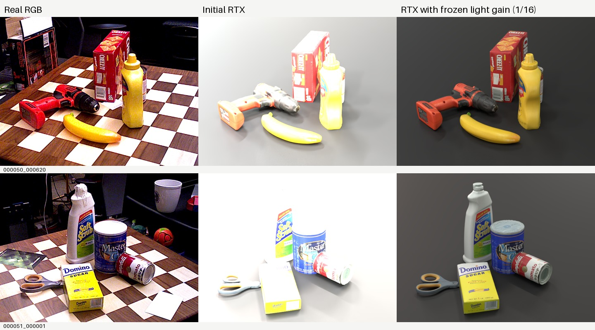
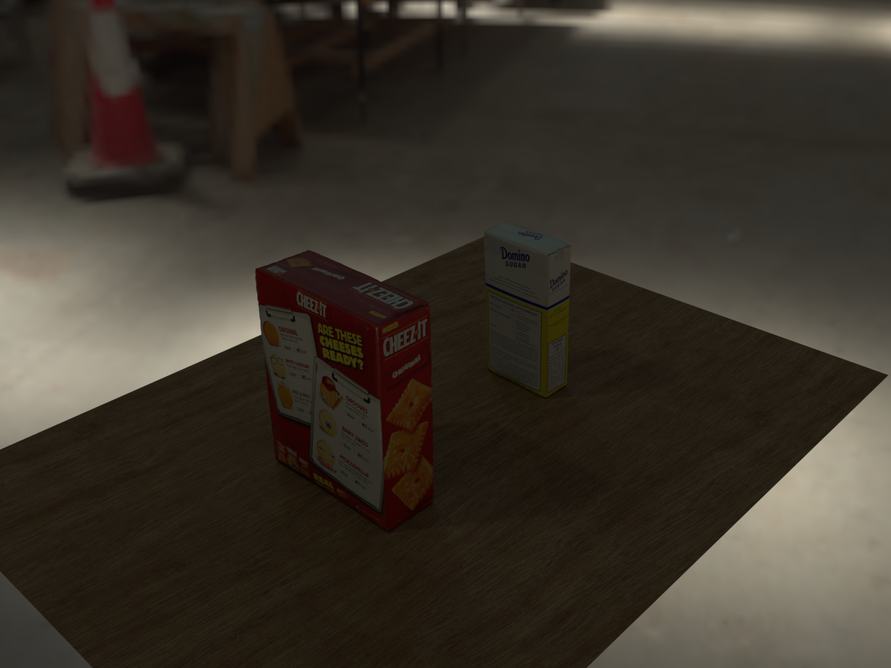
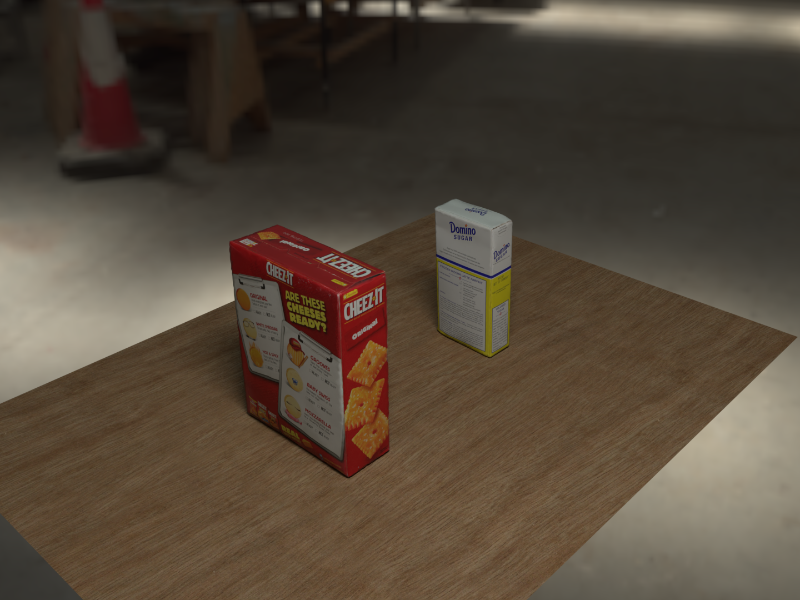
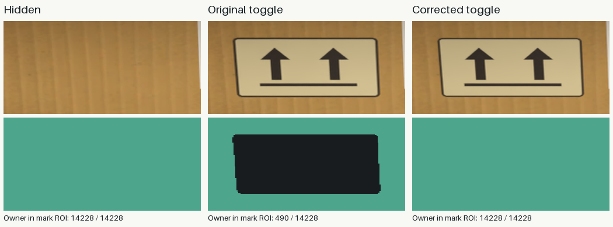

GCP の NVIDIA L4 で、6 クラス・4 カメラ系統・4 配置から 256 枚を撮影した。RGB、個体マスク、距離、学習用矩形を同時に記録した。
主データの受入結果は不合格。 実写と位置合わせした未使用の 6 視点では、形と距離が事前の基準を満たし、色誤差が基準を超えた。合成画像で学習した検出器の実写 AP50 は SIFT が 24.94%、SSDLite が 0%。



